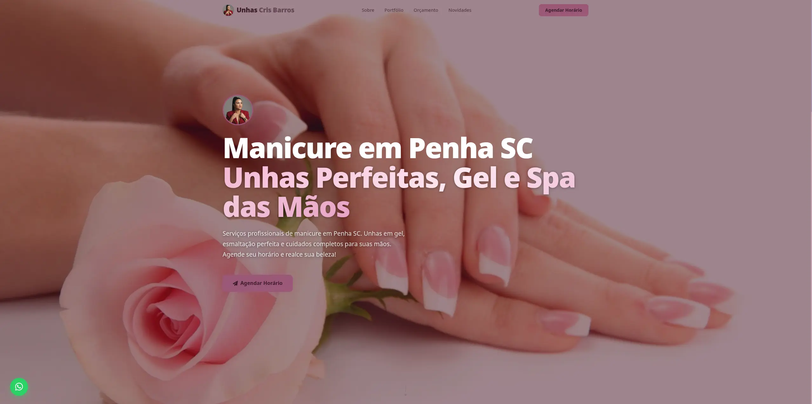

Unhas Cris Barros
Landing page for a professional nail salon business. A freelance project designed to attract local clients in Penha, SC, showcase services, and drive appointment bookings.
Overview
Unhas Cris Barros is a professional landing page developed as a freelance project for a nail salon specialising in gel nails, nail art, and hand spa treatments in Penha, SC. The site acts as the client's primary digital presence — a place where potential clients can discover the full range of services and book an appointment.
A key focus of the project was local SEO: the site was built from the ground up with structured data, consistent NAP (Name, Address, Phone), and geo-targeting to help the business appear in local search results and Google Maps for customers in Penha and the surrounding area.
Problem
The client operated a nail salon but relied entirely on Instagram and word-of-mouth to attract new clients. Without a dedicated website, several challenges limited business growth:
- No web presence meant the business was invisible to anyone searching for local nail services on Google.
- Appointment bookings were handled manually through Instagram DMs, creating friction and inefficiency.
- There was no central place to communicate services, pricing, and location clearly to new clients.
- Without a website, it was harder to build the credibility needed to compete with established salons in the region.
The goal was to solve all of this with a fast, professional landing page built with local search visibility as a first-class requirement.
Solution
The delivered solution is a responsive single-page landing site structured around the client's conversion goals — attracting local search traffic and converting visitors into booked appointments.
- Hero section: High-impact visual with a clear service proposition and a prominent booking call-to-action.
- Services section: Clear breakdown of offered services — gel nails, nail art, hand spa, and traditional manicure — to match search intent.
- Portfolio gallery: Curated showcase of recent work pulled from the client's Instagram to build trust and demonstrate quality.
- Contact & booking section: WhatsApp integration and an external booking link (MaApp) for frictionless appointment scheduling.
- Local SEO: BeautySalon schema markup, consistent NAP, geo meta tags, and targeted keywords for Penha, SC and surrounding cities.
The fully responsive layout ensures a seamless experience from mobile — where the majority of local search traffic originates — to desktop.
Technologies
React
Component-based UI development for a maintainable, config-driven structure — the entire site is customised through a single client.js config file.
Vite
Build tooling with fast development server and optimised production bundles, ensuring quick load times critical for mobile users.
CSS Modules
Scoped component styles driven by a theme object in the client config, making visual rebranding a config change rather than a CSS rewrite.
GitHub Pages
Free, reliable static hosting with automatic HTTPS. Currently deployed at the GitHub Pages URL pending a custom domain.
Pending Improvements
The following improvements are tracked and pending implementation or external action:
In-code (ready to implement)
- sitemap.xml — tells Google which pages to index and when they were last updated.
- robots.txt — instructs crawlers. Without it, crawler behaviour is assumed.
- openingHours in schema — Google uses this to show hours directly in search results. Awaiting confirmation from client.
- hasMap in schema — links the schema markup to Google Maps, reinforcing the business location signal.
- Real OG image — og:image currently points to a missing file. A 1200×630px image is needed so link previews work correctly on WhatsApp and Instagram.
External (requires client or third-party action)
- Custom domain — update siteUrl across canonical, OG tags, and schema once the domain is confirmed.
- Google Search Console — set up after publishing to monitor indexing and catch crawl errors.
- Local citations — list the business on Apontador, Guia Mais, and Telelistas to build local authority.
- Google reviews — the single biggest local ranking differentiator. Client needs to prompt existing customers.
- Google Business Profile photos — improves click-through rate in Maps. Client to upload.